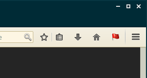

Here is a quick tutorial on how to use RequestPolicy. If you have any questions or ideas, please open a new issue.
The first thing to do when setting up RequestPolicy is to choose a default policy. It determines whether cross-site requests should be allowed or blocked by default, when there are no other rules that match the request. This affects ease of use for the addon, and your security/privacy level:
allow requests to the same domain. Requests between subdomains of the same “site” will also be blocked. For example, example.com -> subdomain.example.com will be blocked. This will cause browsing on many sites to break.The default policy can be changed at any time by going to Preferences > Manage policies > Default policy
| üí° | Blocking requests by default will cause many websites to break. For the first few weeks, you may frequently have to open the RequestPolicy menu to allow requests. Over time you will build up your policy for the websites you visit regularly and so you will only see broken websites when you visit sites you haven't visited before. |
Subscriptions are preset rules maintained and verified by the community. These rules can fulfil different needs, such as blocking known web browsing tracking sites, or allowing requests to allow certain sites to display/work properly.
Just select the subscriptions that you consider useful.
| üí° | Keep in mind that enabling a subscription automatically adds allow/block rules to your RequestPolicy installation, and downloads/updates them automatically with the latest available version. If you want to know more precisely what rules are included in subscriptions, or want to contribute to subscriptions to make RequestPolicy easier to use for others, visit the subscriptions code repository at https://github.com/RequestPolicyContinued/subscriptions |
Note: In case there is a user rule that conflicts with a subscription rule, the user rule always has priority.
Every time a web page tells Firefox to make a request to a different website, Firefox asks RequestPolicy whether the request should be allowed. To decide whether to allow the request, RequestPolicy looks for rules in three places:
The rest of this tutorial will show you how to manage your policy.

Once RequestPolicy is installed, you will see a new flag icon at the top-right of your browser window. This flag turns red when RequestPolicy has blocked requests from the current website you are viewing. Clicking on the RequestPolicy icon brings up a menu of options.
The left pane is divided in 2 sections: Origins and Destinations.
The right pane contains actions for the item you have selected form the left pane.
Destinations are domains that are targets of a cross-site request. Commonly, this can be a CDN, a separate/special domain for images or scripts used on a site, embedded objects to integrate another site, or an advertising/metrics/statistics network.
These destinations are shown in red. Requests from the current page to these domains (e.g an embedded script or image hosted on this other domain) are blocked.
If you click on one of the blocked destinations, you are given options to allow this destination. The first time you visit a site, if it doesn’t display or work properly, you will have to allow some destinations. Let’s say you are browsing example.com, and it doesn’t display properly:
Look in the menu for blocked destinations that have a large number of blocked requests (number on the right of the domain name). This might indicate that the page tries to load a lot of content from this domain, but RequestPolicy blocks it. Click on one of these destinations (eg. example.net). From there, the possible actions are displayed in the right pane.
Allow requests from example.com to another.net: Use this if you want to allow pages from example.com to use content hosted on another.net.
another.net is really required to display the page, the page will be working when you reload it (just click anywhere outside the menu).Allow requests to another.net: This will allow all requests to another.net, from any page, on any domain. This is not recommended unless you keep having to allow requests to another.net from many sites.
Block requests from example.com to another.net and Block all requests to another.net: This is useful if you want to mark this destination as untrusted/useless/harmful.
Block all requests by default default policy will block requests to any domain, even if you do not manually block it. Still, manually blocking domains can be used to distinguish domains that you personally don’t trust (for example a known tracking/analytics domain)Stop blocking/allowing requests to another.net: This removes the rule you had previously set for this destination. The default policy will be used instead.
Note: Each action has a Temporarily block/allow alternative. This will add a temporary rule that will be removed when you click the Revoke all temporary permissions menu item. When you close Firefox, all temporary rules are forgotten.
Requests to these destinations are allowed, because you manually allowed them, or the default policy is to Allow requests by default. The actions for allowed destinations are similar to those for blocked destinations.
If a destination had some requests to it blocked and others allowed, it would be listed under another category called “Mixed destinations”.
Origins are domains from where cross-site requests originate. Commonly, this is the site you are currently visiting when the cross-site request is done (there is an exception, see below). For example this can be a <script> tag in the HTML page, or an <img> that tries to embed an image from another site. Origins have one action available:
Allow requests from example.com: All requests originating from example.com will be allowed. Use this if you trust the site to never embed any harmful/useless content, and want it to work fully as intended by the site itself. This should only be used on very trustworthy sites.
Block all requests from example.com if you use the Allow requests by default default policy.It’s also possible that one of the destinations from this page was itself a document or redirect to some other destination. In that case, the destination is also an origin of requests and you’ll see it listed under Other origins. If you click on one of the other origins, the list of blocked and allowed destinations will change to show you the destinations from that origin.
That’s it! Now you should be able to do most of the things RequestPolicy is built for. For more advanced topics, you can read the documentation below.